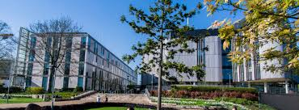

The University of Southampton has seven campuses, six in the UK and one in Malaysia. We were invited by the Malaysian Government to establish a branch campus for engineering within the EduCity development in Iskandar, Malaysia with our campus opening in October 2012. In 2016, our first group of students graduated with excellent results from our UK campus where they obtained 10 First Class and eight Upper Second Class MEng degrees. Since its opening in 2012, the university has grown the number and variety of undergraduate programmes on offer and recently adding Business, Computer Science and Economic BSc programmes to its portfolio as well as expanding the Foundation Year courses. Our split campus (UK and Malaysia) degree programmes offer the chance to gain a unique 'Southampton' education for the first two years in Malaysia combined with the final two years at a world-class research-centred university in the UK. Our BSc courses are available to study full time in Malaysia or transfer to the UK after the first of second year of study*. Regardless of whether you study the split campus programmes or study full time in Malaysia you will graduate with a degree from an internationally recognised university and gain a truly global education experience. In October 2021, the University of Southampton Malaysia has relocated to a brand-new campus, located in Eco Galleria, Iskandar Puteri, Johor. The upgraded 150,000 sq. ft. multi-storey campus is built to accommodate up to 2,000 students and features state-of-the-art facilities! We invite you to study at the University of Southampton Malaysia and take your place at the cutting edge, among some of the most talented students and academics from around the wor

To be the premier college of excellence for the study of various disciplines such as law, accounting, business management, computer science and English language.
To provide quality education that focuses on knowledge, skills, attitude and employability at an affordable fee to all.
"Quality" means having competent and passionate lecturers who could provide quality notes, lecture in ways that students can easily understand, and challenge them to think creatively and solve problems. In addition, the programmes offered by the University of London are world-class programmes, which not only enhances graduates' employability but are also a source of pride for our graduates.